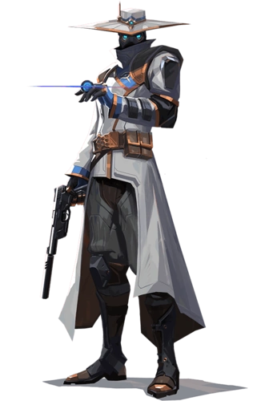
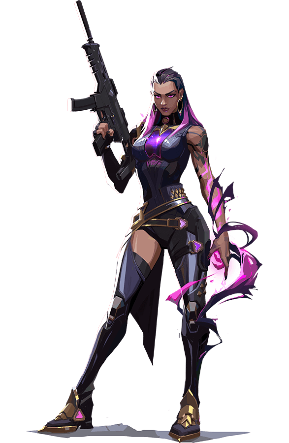

ASTRA

Astra, la agente ghanesa, controla las energías del cosmos para dar forma al campo de batalla a su antojo. Con pleno dominio de su forma astral y un gran talento para la anticipación estratégica, siempre va eones por delante de los movimientos de sus enemigos.
BREACH

Breach, el sueco biónico, dispara una serie de explosiones cinéticas controladas para abrirse paso por el territorio enemigo. Su capacidad para infligir daño y sembrar el caos garantiza que los combates siempre estén de su parte.
BRIMSTONE

De origen estadounidense, Brimstone cuenta con un arsenal de órbita que garantiza que su equipo siempre vaya por delante. Su capacidad para aportar herramientas de utilidad de una forma segura y precisa lo convierte en un comandante de primera línea sin igual.
CHAMBER

El diseñador de armas francés, siempre bien vestido y bien pertrechado, expulsa a los agresores con precisión letal. Chamber aprovecha su arsenal personalizado para resistir, elimina enemigos a distancia y crea la contingencia perfecta para cada plan.
CYPHER

Cypher es un experto en información de Marruecos que se especializa en redes de vigilancia y es capaz de seguirle la pista al enemigo constantemente. No hay secreto a salvo ni maniobra que pase desapercibida. Cypher siempre está alerta.
DEADLOCK

Deadlock, la agente noruega, despliega un surtido de avanzados nanocables para defender el campo de batalla de cualquier asalto, por letal que sea. Nadie escapa a su atenta mirada ni sobrevive a su ferocidad implacable.
FADE

Fade, la cazarrecompensas turca, controla el poder de las pesadillas para poner al descubierto los secretos de los enemigos. Armada con el terror mismo, da caza a sus objetivos y revela sus miedos más profundos, para después acabar con ellos en la oscuridad.
GEKKO

Gekko, de Los Ángeles, lidera una pequeña pandilla de calamitosas criaturas. Sus colegas toman la delantera para dispersar a los enemigos, mientras que Gekko los persigue para luego reagruparse y repetir el proceso.
HARBOR

Desde las costas de la India, Harbor llega al campo de batalla armado con tecnología ancestral capaz de controlar el agua. Libera espumosos torrentes y demoledoras olas para escudar a sus aliados o machacar a quien se interponga en su camino.
JETT
Jett viene de Corea del Sur, y su estilo de lucha ágil y evasivo le permite asumir grandes riesgos. Corre y salta de aquí para allá en las refriegas y hace trizas a los enemigos con una rapidez espectacular.
KAY/O

KAY/O es una máquina de guerra construida con un único propósito: neutralizar a los radiantes. Su poder para suprimir habilidades enemigas incapacita a sus adversarios, lo que asegura la ventaja para él y sus aliados.
KILLJOY

Killjoy es una brillante agente alemana que se encarga de tomar posiciones clave del campo de batalla con su arsenal de inventos. Si su daño no acaba con los enemigos, su horda de robots ayudará a su equipo a despejarlos en un abrir y cerrar de ojos.
NEON

Neon, una agente filipina, se lanza hacia la batalla a una velocidad trepidante, disparando descargas bioeléctricas tan rápido como las genera su cuerpo. Se adelanta para pillar a sus enemigos desprevenidos y acaba con ellos más rápido que una bala.
OMEN

Omen es un fantasma de tiempos pasados que acecha en las sombras. Es capaz de cegar al enemigo, teleportarse a través del campo de batalla y sembrar el caos y la paranoia mientras sus rivales se preguntan dónde atacará la próxima vez.
PHOENIX

Phoenix proviene del Reino Unido y sus poderes estelares salen a relucir con su estilo de combate, que prende fuego al campo de batalla de forma deslumbrante. No le hacen falta refuerzos; es él quién se lanza al combate y marca el ritmo.
RAZE

Raze llega desde Brasil con ganas de hacer que todo salte por los aires. Con su estilo de juego basado en la fuerza bruta, destaca a la hora de barrer a grupos de enemigos atrincherados y de despejar áreas estrechas con explosión y sin compasión.
REYNA

Desde el corazón de México, Reyna llega para dominar los combates uno contra uno y cada asesinato que consigue la hace más fuerte. Su potencial es prácticamente infinito, y la destreza individual es el único factor determinante de su éxito.
SAGE

Originaria de China, Sage destaca a la hora de crear espacios seguros para su equipo allá donde va. Sus capacidades especiales para revivir a compañeros caídos en batalla y para mantener a raya los asaltos enemigos la convierten en la calma en mitad de la tormenta para su equipo.
SKYE

Skye y su manada de bestias se abren paso desde Australia y a través de territorio hostil. Sus creaciones obstaculizan los avances enemigos y su capacidad para curar a los demás se ocupa de que, a su lado, su equipo esté a salvo.
SOVA

Nacido en el eterno invierno de la tundra rusa, Sova destaca a la hora de localizar, perseguir y eliminar a los enemigos con una eficiencia y una precisión inclementes. Su arco personalizado junto con su sobrenatural capacidad de rastreamiento hacen que sea imposible escapar.
VIPER

Viper es una química estadounidense con un amplio arsenal de dispositivos venenosos que le sirven para tomar el control del campo de batalla y cegar a los enemigos. Si las toxinas no acaban con su presa, la paranoia la rematará.
YORU